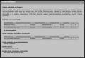
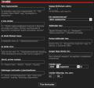
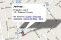
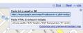
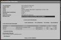
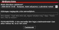
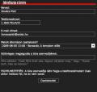
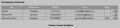

Hosszas fejlesztgetés
eredményeképp újabb funkcióval bõvült a BlogGép, amelynek elsõsorban azok örülnek majd, akik nem
csak otthon ülnek, és szeretnének másokkal kirándulásra, közös programokra, Bombagyár filmklubba
vagy bármilyen egyéb programokra járni.
A
Bombagyár
Túraszervezõ a Bombagyár aloldala, ahol különféle programokat lehet meghirdetni, s azokra
jelentkezni. Természetesen nem csak túrát, hanem bármilyen más, közösségi érdeklõdésre számot tartó
eseményt meg lehet itt hirdetni: koncertet, elõadást, tüntetést, kocsmázást, paintball-meccset vagy
orgiát. A Bombagyár olvasói a Túraszervezõ révén értesülhetnek az érdekes eseményekrõl, amelyekre
érdemes ellátogatni. Egyúttal segít az olvasóknak, hogy eljuttassák egymást a különféle programok
helyszínére. Például ha valaki autóval megy egy fesztivál helyszínére, de van még két üres hely a
kocsijában, meghirdetheti ezt a lehetõséget. Hogy a felhasználás további lehetõségei milyen
szélesek, rövidesen látni fogjátok.
A Túraszervezõt a
turaszervezo.bombagyar.hu címen, vagy a
lap jobb oldalán, az ugatófal alatt újonnan megjelent
Túraszervezõ lista alatt lehet elérni. Kattints a
túraszervezõ linkre, és már láthatod
is.
1. A
Túraszervezõ fõoldalaA Túraszervezõ
fõoldalán egy listát láthatsz különféle túrákról. Ezek a következõképp vannak
csoportosítva:
Az általad szervezett túrák: A saját
túráid, amelyeket meghirdettél, de még nem történtek meg. A lista elemeire kattintva léphetsz be a
túrába, és ott szervezkedhetsz tovább, de errõl majd késõbb. Ha éppen nincs meghirdetett túrád, a
Jelenleg nincsenek feliratot látod itt. Nem kell elkenõdni,
mert az
Új túra szervezése link pont azért van, hogy ezen
az áldatlan állapoton felülemelkedhess.
Túrát csak regisztrált felhasználók hozhatnak
létre. Túrához csatlakozni azonban nem csak regisztrált felhasználóknak lehet. Ezt azonban a túra
szervezõje dönti el. Meg lehet hirdetni egy túrát úgy is, hogy mindenki számára nyitott, és úgy is,
hogy csak gyárlakóknak.
Túrák, amelyekre útitársként
jelentkeztél: Itt értelemszerûen azokat a túrákat látod, amelyekre jelentkeztél. Ha nem vagy
belépve, vagy nem vagy regisztrált Bombagyár-felhasználó, akkor sajnos nem. De a nem regisztrált
olvasók túraregisztrációi természetesen megvannak, nem kell megijedni.
Túrák, amelyekre most jelentkezhetsz: Ezek azok a túrák, amelyek
szeretettel várnak téged. Bármelyikre rákattintva megtudhatod, kik szervezik, hová mennek, és honnan
indulnak. A csak regisztrált felhasználókat váró túrákat a nem regisztrált felhasználók nem
látják.
Korábbi túráid: Saját, már lezajlott
programjaid. Azok a túrák kerülnek ide, amelyeknek minden találkozója múltbéli, tehát régebbi, mint
az aktuális dátum. A múltbeli túrákat csak nézegetni lehet, arra jó, hogy ne veszítsd el a
résztvevõk adatait.
Korábbi túrák, amelyeken részt
vettél: Befejezõdött programok, amelyeknek nem te voltál a szervezõje, de részt vettél
rajtuk. Nem regisztrált olvasóknak sajnos errõl is le kell mondaniuk, tartsák fejben, kivel mentek
és hová.
2. A Túraszervezõ
RSS
A Túraszervezõn kívül az ugatófal alatt
is láthatjátok a soron következõ túrákat. Itt az elkövetkezõ egy héten belüli programok jelennek
meg, vagyis az aktuális dátumtól 7 vagy annál kevesebb nappal késõbb kezdõdõek.
A
túra-rss link a Túraszervezõ RSS feedje. Ezen
mindig a legutóbb meghirdetett tíz túra olvasható. Figyelem, nem az elkövetkezõ tíz nap! Az RSS
arra való, hogy az újdonságokat jelezze, ezért ide akkor kerül fel egy túra, amikor meghirdetik.
Vagyis meghirdetési sorrendben találod rajta a legutóbbi tízet.
3. Egy túra meghirdetése
Mit szeretnél? Kirándulást, sörözést, koncertet, kiállítást, vagy csak van szabad
hely a kocsidban? Ajánlani szeretnél egy érdekes programot, vagy közösségi eseményt szervezni?
Teljesen mindegy: akkor is az
Új túra
szervezése linkre fogsz kattintani. Feltéve persze, hogy regisztrált felhasználó vagy, és be
is vagy lépve.
Ez az ablak fog
megjelenni. A mezõket töltsd ki értelemszerûen. Így például:
Túra megnevezése: Adj valami olyan nevet a túrának, amibõl érthetõ, hogy mi ez, és mi
a célja. Például:
Gyalogtúra a Bakonyban - ebbõl mindenki
érti, hová mentek.
Magyar Sziget autóstúra - ebbõl
sejthetõ, hogy autóval mész egy fesztiválra, és van még hely, vagy lehet csatlakozni.
Paintball-verseny Érden,
Bombagyár Filmklub, Õsmagyar számítógépek kiállítása, ezek mind tömör és érthetõ
megnevezések.
A túra leírása: Itt lehet bõvebben
kifejteni, mirõl is van szó. Tehát például:
Három napos gyalogtúra
a Bakonyban, csak gyakorlott túrázóknak. Vagy:
Kocsival
megyek a Magyar Szigetre, még lehet csatlakozni. Esetleg:
XXII. országos Paintball-kupa. Állítsunk össze egy Bombagyár-csapatot, és verjünk el
mindenkit!Az úticél
földrajzi helye: Ide írd a túra végcélját, de csak a települést vagy földrajzi egységet. A
bakonyi túra esetén
Bakony, a Magyar Sziget esetén
Verõce, egy erdélyi csalámbozás esetén pedig egyszerûen
Erdély. A Bombagyár Filmklub meghirdetésekor ide
Budapest fog kerülni.
Az
úticél címe: Ha van pontosabb helyszínleírás, azt ide írd. A bakonyi túra esetében nem kell,
hiszen a túra nem egy adott pont elérésérõl szól. A Magyar Sziget esetén ideírhatod:
Csattogó-völgy. Ha pedig sörözést hirdetsz, írd ide, mi a kocsma
neve, és hol van.
Jármû, amivel mentek:
Természetesen csak ha van. Autóstúra esetén
autó,
biciklitúra esetén
bicikli, gyalogtúra esetén nem írsz
ide semmit, vagy azt, hogy
vonat, mert nyilván nem
Pesttõl fogtok odáig gyalogolni.
Különleges tudnivalók a
jelentkezõknek: Ide írj bármilyen speciális tudnivalót. Például ha csak nemdohányzó
útitársakat vársz, vagy ha a filmklubra nem akarsz beengedni vakokat, azt ide írd.
Szabad férõhelyek száma: Arra az esetre, ha a férõhelyek száma
korlátozott. Autó esetén ez értelemszerû, a filmklub helyszínének is van korlátozott a
befogadóképessége, de egy gyalogtúrán vagy egy kocsmázáson akárhányan részt vehetnek. Ha
korlátozott a férõhelyek száma, írd ide, hány hely van szabadon, ha nem korlátozott, írj be
0-t.
Kik csatlakozhatnak? Itt állíthatod be, hogy
bárki jelentkezhet-e, vagy csak regisztrált gyárlakók. A harmadik opció, hogy a túra le van zárva,
ez esetben csak neked jelenik meg, és senki sem jelentkezhet, amíg fel nem oldod. Ez arra jó, hogy
ha már elegen jelentkeztek, felfüggesztheted a jelentkezéseket.
Találkozási hely: Az a hely, ahol a túra résztvevõi találkoznak. Több ilyen hely is
lehet, de egyet mindenképpen meg kell adni a túra meghirdetésekor, azaz itt. A találkozási hely
ismét egy szélesebb földrajzi név, például
Budapest vagy
Szeged.Pontos
találkozási hely: A találkozás pontos helye. Tehát például a bakonyi túra esetében lehet
Keleti pályaudvar, a lépcsõ aljában, a Bombagyár Filmklub
esetében
Fõnix klub, V. Paulay Ede u. 5., kocsmázás esetén
pedig
Bástya sörözõ. Elõadás, kiállítás meghirdetése esetén
természetesen annak helyszínét kell megadni.
Google Maps
térkép link: Mivel nem mindenki született GPS-szel a bal szeme helyén, ajánlatos a Google
Maps-en megjelölni a találkozási pontot, és a linket idemásolni. Például a Bombagyár Filmklub
példájánál maradva ennek menete a következõ.
Elõször is menj
a Google Maps-re, a
maps.google.com címen. Itt írd be a keresõbe a helyszín pontos
címét.
A térképen
megjelenik a helyszín. Ha nem tudod ilyen pontosan a címet, az sem baj. Ha például a helyszín
Dédestapolcsány, de az utcát nem tudod, simán írd be a település nevét, és add meg azt a linket.
Majd odatalálnak a résztvevõk valahogy...
(Amúgy ez a
Dédestapolcsány
rohadt egy kommunista putritelep lehet. Csak ex has írtam be a nevét, de most nézem a Google
Maps-en, alig van hat utcájuk, de van közte Marx Károly utca, Martos Flóra utca, Ságvári utca és még
Lenin utca is - atomot nekik...)
A térkép fölött,
a jobb felsõ sarokban találod a Link gombot. Megnyomására lenyílik ez a kis panel. Az elsõ csíkban
van a link, ami neked kell: kijelölöd, és Ctrl-C. Ezt másolod át a Túratervezõbe. Ennyi
volna.
Indulás napja, Indulás
idõpontja: Nyilván nem árt ezt is elmondani az esetleges résztvevõknek, mert ott fognak
kóvályogni Dédestapolcsányban a Lenin-szobor lesajnáló tekintetétõl kísérve, Ságvári kísértetének
hátborzongató vihogása közepette. (Na jó, Lenin-szobor szerencsére nincs.)
Ha ez megvan,
megnyomjuk a gombot a lap alján, és nesze, van egy túránk. Nézzük, mit lehet vele csinálni. Kattints
a listán megjelent túrára, és mindjárt látni fogod.
4. A túra
Így néz ki egy
klasszikus túra, a bakonyi erdei kirándulás. Ha valaki rákattint, ugyanezt fogja látni, csak a
szerkesztésre szolgáló linkek nélkül, mert azok értelemszerûen csak a túra "gazdájának" állnak
rendelkezésére (illetve az ötcsillagos supervisoroknak, mert õk belenyúlhatnak mások túráiba
is).
Mint látható, ennek a túrának két állomása is van. Nem csak a Keletiben, de a túra
helyszínén, Borzaváron is lehet csatlakozni a csapathoz. A Túratervezõ az állomásokat idõrendi
sorrendbe teszi.
5. Új állomás felvétele
és állomás törlése
Hogyan lehet állomást felvenni? Természetesen az
Új állomás felvétele linkkel. A megjelenõ
ablakban ugyanazokat az adatokat kell megadni, mint az új túra létrehozásakor, az elsõ állomás
megadása során: helyszín, közelebbi helyszín, dátum, idõpont, és opcionálisan Google Maps link.
Az állomások bármikor módosíthatóak a kis ceruza ikonra kattintva. Ha a túra gazdája módosít
egy állomást, a túra összes olyan résztvevõje, aki azon az állomáson csatlakozna, automatikus
figyelmeztetést kap e-mailben a változásról.
Állomást törölni az X ikonnal lehet. Ha egy
állomást törölsz, az összes olyan utas, aki ott csatlakozott volna, úgyszintén törölve lesz. Errõl
is kapnak figyelmeztetõ e-mailt.
Bármelyik állomást lehet törölni, de egynek mindig kell
maradnia, ezért ha mindet törölted, az utolsó mellett már nem jelenik meg az X
ikon.
6. A túra módosítása és
törlése
Ha az egész túrán változtatni szeretnél,
használd a
Túra módosítása linket. Itt
módosíthatsz minden fõ adatot, így a túra nevét, a férõhelyek számát, miegymást. Törlésre
értelemszerûen a
Túra törlése link
szolgál. A túra résztvevõi mindkét mûvelet esetén értesítést kapnak.
7. Nyomtatóbarát formátum
Nagyobb túrák esetén szükség lehet a résztvevõk listájára útközben. Erre szolgál a
Nyomtatóbarát link. Rákattintva
állomások szerint listázva kapjuk meg a túra minden résztvevõjének listáját. Így a helyszínen könnyû
követni, hogy a résztvevõk közül ki hol csatlakozik, nem veszítünk el senkit.
8. Csatlakozás egy túrához utasként Ha regisztrált
felhasználók vagy - és be is vagy lépve - akkor nem kell sokat szarozni, csak megmondani, melyik
állomáson kívánsz csatlakozni a csapathoz. Esetleg fûzhetsz hozzá megjegyzést, üzenetet is a túra
szervezõjének. Például:
"Tíz percet késni fogok, várjatok
meg!"Ha nem vagy
regisztrálva, akkor több dolgod lesz, mert utálunk. Meg kell adnod a nevedet, a telefonszámodat, az
e-mail címedet, és még azt is, hogy hol kívánsz csatlakozni, valamint hogy van-e valami különleges
nyavalyád-bajod, amit közölnél.
Mint a figyelmeztetésbõl kitûnik, a csatlakozással felfedsz
bizonyos személyes adatokat a túra szervezõjének, nevezetesen valódi neved, telefonszámod és e-mail
címed. A túra szervezõje mindezt látni fogja, ha ránéz a túra adatlapjára, és a nyomtatóbarát
lapon is megjelenik.
Feliratkozás után
így fog kinézni a túra a szervezõ számára. Mások számára a telefonszámok és az e-mail címek helyén
a
-- Nem publikus
-- felirat virít. A kis levélikonok azonban mindenkinek ott vannak, így lehet levelet
küldeni a túra egyes résztvevõinek. Ha nem esett volna le: a túra szervezõjének is lehet, csak az
õ neve és ikonja a táblázatok fölött van, a neve mellett. A
Levél mindenkinek menüpont pedig azért van, hogy a szervezõ minden
résztvevõnek egyszerre tudjon levelet írni, ha valami fontos közölnivalója van.
A
jelentkezésekrõl a túra szervezõje e-mailben értesítést kap. Mint látható, a nevek mellett is
vannak is X-ek, azaz a szervezõ törölhet jelentkezéseket, ha akar. Errõl viszont a törölt fog
levelet kapni, hiszen az információs szupersztráda korában semmi sem maradhat többé titokban. A
regisztrált felhasználók magukat is törölhetik, õk csak a saját nevük mellé kapnak
X-et.
Jelentkezést megváltoztatni nem lehet. Aki másik állomáson szeretne inkább
csatlakozni, törölje magát, és regisztráljon újra.
9. Létszámon felüli jelentkezés Ha egy túrán betelnek a korlátozott
férõhelyek, az még nem jelenti, hogy más már nem jelentkezhet. Jelentkezni mindig lehet, de aki a
megadott létszám fölött iratkozik fel, annak a neve pirossal fog megjelenni. Ez azért van, mert
egy túránál mindig közbejöhet valami, valaki nem tud eljönni, mégis szabadon hagyva egy helyet. A
létszámon felüli feliratkozás azt jelenti, hogy az illetõ nem biztos, hogy befér. Tehát benne van
a pakliban, hogy lemarad a túráról.
Ez lenne tehát a nagy újítás. Reméljük, hasznotokra fog
válni, és segít tovább erõsíteni ezt az amúgy is kiváló közösséget. Szervezkedjetek, mászkáljatok,
csináljatok sok érdekeset. Hajrá, Bombagyár!